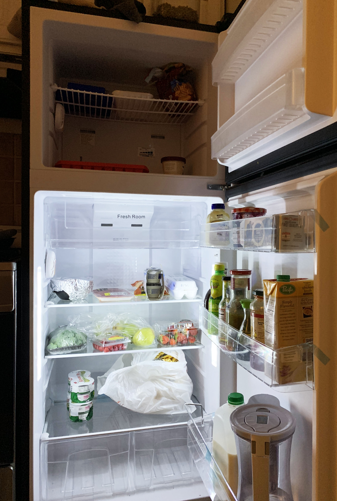
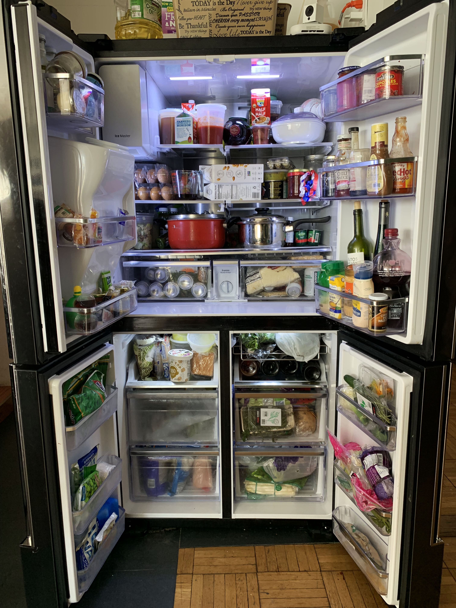
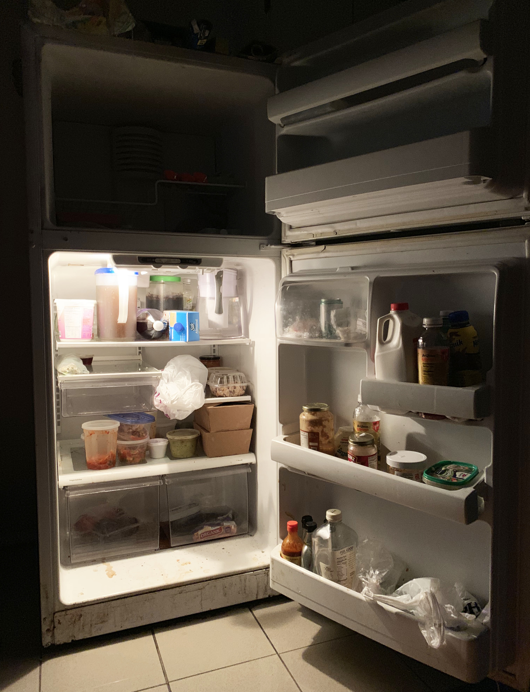
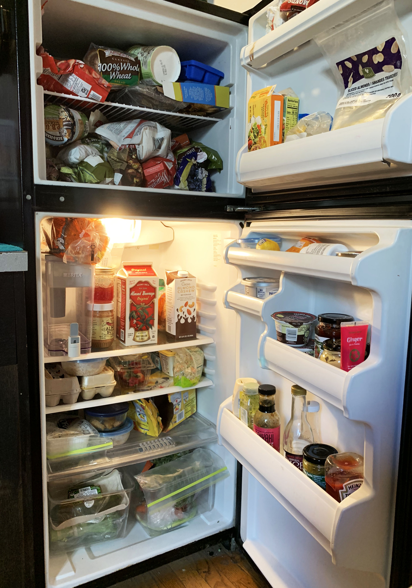
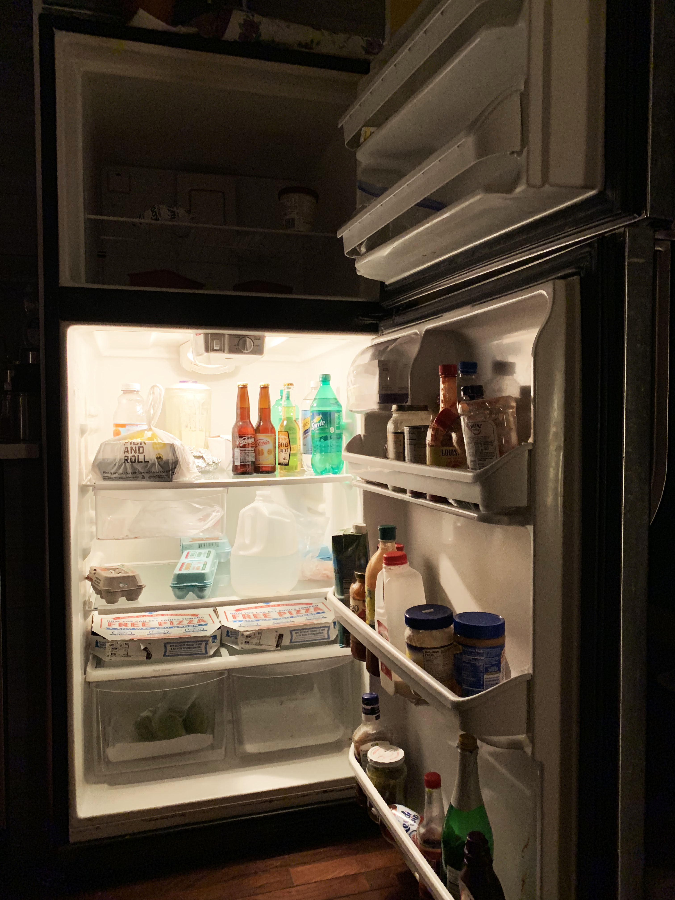

web interaction
2019
exercise 1
Basking in the Glow
A project documenting what's inside people's fridges (good, bad, and smelly) and how it makes them, them. Photos and interviews done by Ellie Plass.
 Valerio Aleman, 21
Jazz Trombone Junior, The New School
Is what is in this fridge in any way a good representation of you? “I don’t know because I feel like that’s only, like, maybe like a third of the food I eat. There’s such a big, pastas and all that shit that don’t have to go in the fridge. And currently not right now because there should be more meat in there than there is [because I’m about to leave for break] and I can’t risk things going bad.”
What's something you'd never go without? “Cheese. Any kind of cheese. Because I always have some kind of meat but I always gotta have cheese to go with the meat.”
What's something you'd never find in there? “Any sort of like leaf. Like, I got broccoli and occasionally asparagus but not like kale or lettuce or like something that at one time was a leaf.”
What's your favorite thing in your fridge right now? “Right now? I bought a HoneyBaked Ham because I didn’t feel like making meat for the week. There’s a HoneyBaked Ham in there, yeah. I bought a whole one too, I spent like 60 bucks. I’ve been eating it for like the last week and a half.”
Would your mother be proud of this fridge right now? “I think there’s enough fruits in there that she’d be pretty proud of me. I eat healthier than most.”
Where do you go to eat on an average weeknight when you don't feel ike cooking? “Oh, this is real bad. Crown Chicken. Popcorn chicken. Yeah, that’s like, that’s when I’m getting home at like 3, 4 in the morning and that’s the only thing that’s open and I don’t wanna make food. And it’s so funny because like, it’s such a juxtaposition to what I normally eat so like I’m like sending my mom pictures of what I’m eating, and it’s like handmade sliders with like brioche rolls and like a side of corn dip and like all this stuff and then I’m like crown chicken. When it gets bad, it gets bad.”
 Lamia Funti
Restaurant Owner, chef
Is what is in this fridge in any way a good representation of you? “Not the picture you took… but in general yes there was some cooked food there was a lot of vegetables, yes. It’s a lot of vegetables and fruits.”
What's something you'd never go without? “Fruit. Definitely oranges, apples, and mangoes and watermelon.”
What's something you'd never find in there? “I was gonna say milk but the first picture was fucking milk! Boxed pizza like boxed stuff usually. Boxed food.”
What's your favorite thing in your fridge right now? “Right now? Kohlrabi salad that I made yesterday. Kohlrabi is a vegetable, actually I don’t know if it’s considered a vegetable or a fruit. It’s hard to get, k-o-l-h-r-a-b-i, (sic) and it’s delicious, it’s like a jicama but it has more taste, so it has like crunchiness. I crave that thing and I make it with apple, I make kind of like a slaw with cilantro, it’s delicious.”
Where do you buy most of your groceries? “In many many different places depending on what I buy. So, I have a store for fruit in Brooklyn, I go just to buy the fruits. Then the vegetables I go to Eataly, anywhere between Eataly to Whole Foods, fish I go to Chelsea Market, and we don’t eat meat, so. And anything like spices and all that, Amazon. And bulk stuff, Costco.”
Where do you go to eat on an average weeknight when you don't feel ike cooking? “In restaurants. Only different restaurants that i want to try for inspiration. I don’t have like a set place.”
 Josh Sadek, 33
Waiter, aspiring hip-hop artist
Is what is in this fridge in any way a good representation of you? “I’d say so, I mean some of it is my housemates, but the yerba mate which I’m drinking now is my favorite beverage, it is stimulating yet cognitively enhancing, greek yogurt behind that, is because like I love protein and making muscles and eating efficiently. Water is something I think I wish i drank more of. Remnants of shit that like I haven’t eaten sitting around? Yeah. That’s a representation of my lack of physical orderliness.”
What's something you'd never go without? “Strangely I’d have to go with the water, ‘cause even though I don’t drink it so much like everything else might switch around. At this stage in my life I’m a young man so literally I don’t even shop based on like things that I like, I shop based on functionality. The yogurt is because I go to the gym, I do yoga, I bike ride. You know, I’m like my body needs fuel and that is the highest form of fuel to me. The yerba mate, I think yerba mate might be the other thing because I actually love yerba mate.”
What's something you'd never find in there? “I think the answer would be cheap factory made cakes. I used to like them as a kid, I don’t think I would buy them now. It’s like Pepperidge Farm it comes in a box. I think I would buy one but I would just do it like to eat it to relive a childhood experience and throw it out.”
What's your favorite thing in your fridge right now? “Probably the yerba mate.”
Where do you buy most of your groceries?“The deli. There’s a grocery deli.”
Would your mother be proud of this fridge right now? “I’d say maybe not. I don’t think she’d care but probably leaning towards no because there’s really no substantive food in there, there’s really no chicken or healthy shit like real food in there, it’s just like yerba mate and greek yogurt. I eat my greek yogurt with olive oil, that’s weird, isn’t it?”
Where do you go to eat on an average weeknight when you don't feel ike cooking? “I’d say it ranges from sushi, indian, or falafel.”
 Kyrstan Brandt, 20
Culture and Media Student, The New School
Is what is in this fridge in any way a good representation of you? “I think yeah, yeah. I mean it’s a good representation of me now, in this moment, because it’s all like healthy stuff so, yeah.”
What's something you'd never go without? “Cilantro.”
What's something you'd never find in there? “I really don’t know, maybe like sauerkraut? You know? My old roommate used to eat it straight out of the can, and I don’t like that. It just makes me think of sausage and German sausage just grosses me out, like the texture.”
What's your favorite thing in your fridge right now? “I mean honestly the cilantro. Actually, okay this stuff is really good, it’s mandarin orange chickenless chicken, it’s from Trader Joes and it tastes like real chicken.”
Where do you buy most of your groceries?“Trader Joes.”
Would your mother be proud of this fridge right now? “I think so. I don’t know. Actually, maybe. She’s healthy but sometimes she doesn't like that I make her eat healthy stuff when she’s here.”
Where do you go to eat on an average weeknight when you don't feel ike cooking? “I mean, it used to be poke, but no. Dudleys! I’ll order the brussel sprouts from there. I really wanna become a regular there, I mean I kind of already am.”
 Rami Elkanawaty, 27
Uber Driver
Is what is in this fridge in any way a good representation of you? “No. Because it’s empty. I’m not an empty person.”
What's something you'd never go without? “Ketchup.”
What's something you'd never find in there? “An eggplant. I don’t know how to cook eggplant.”
What's your favorite thing in your fridge right now? “Ice cream. Cookies and cream.”
Where do you buy most of your groceries?“Key Food across the street.”
Would your mother be proud of this fridge right now? “Hell no. No. No. She always tells me that I need to buy groceries for the week and I never do that.”
Where do you go to eat on an average weeknight when you don't feel ike cooking? “Wendy’s. Double Dave’s meal. Double cheeseburger, french fries, and coke, medium. Not large.”